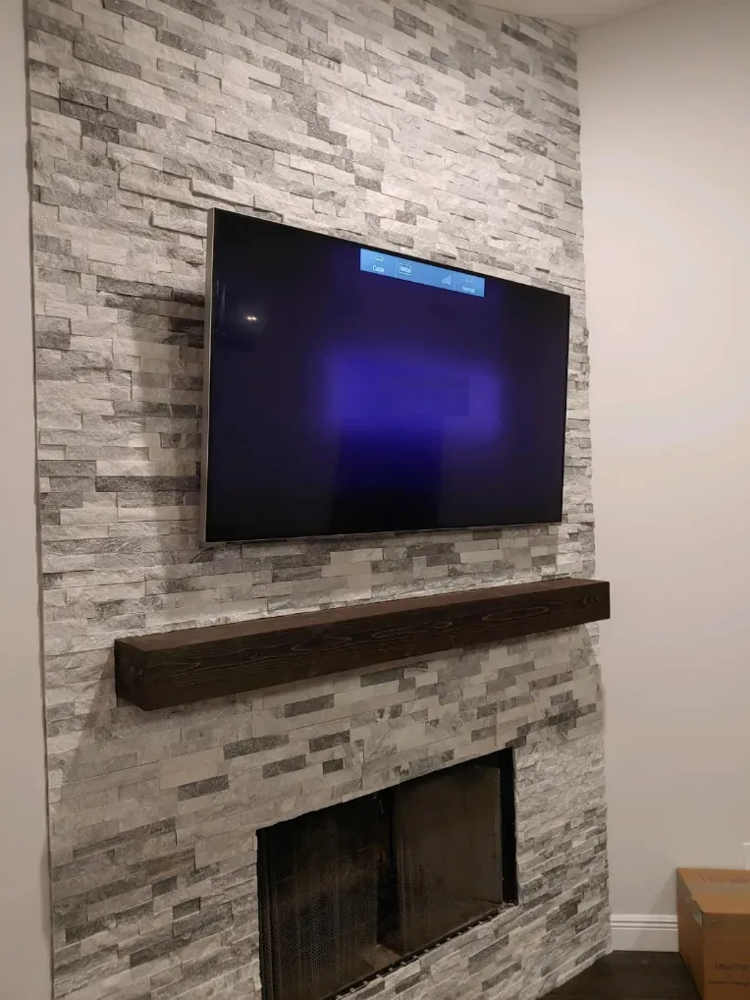
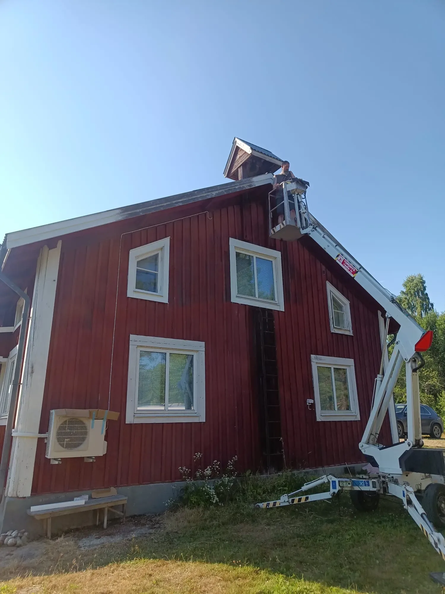
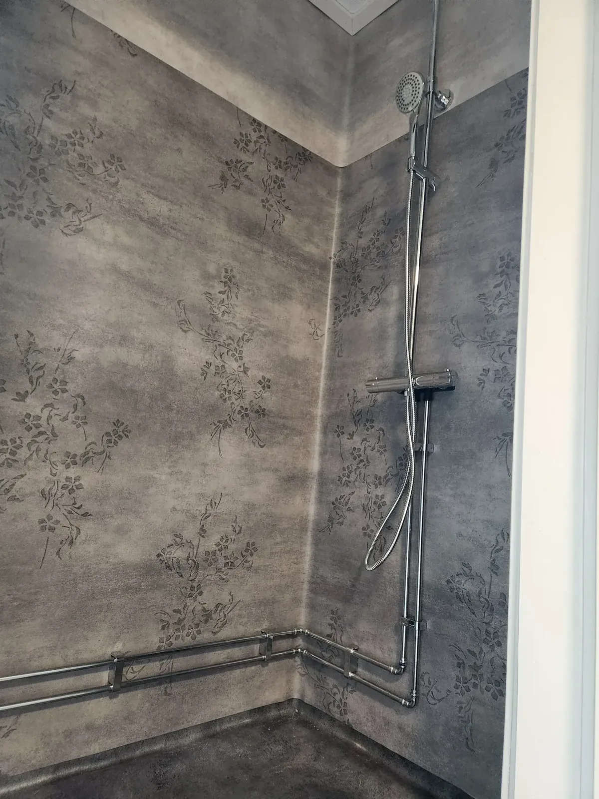
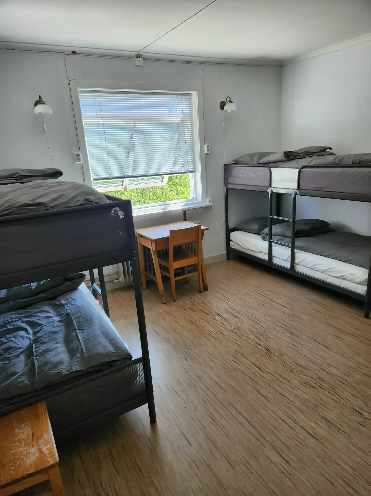
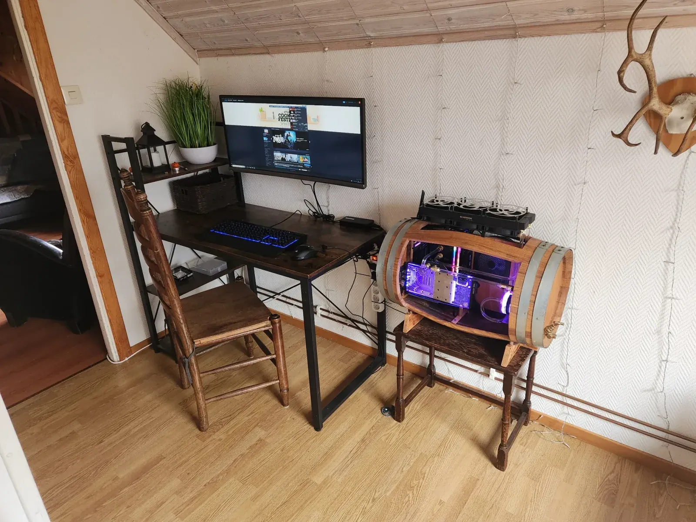
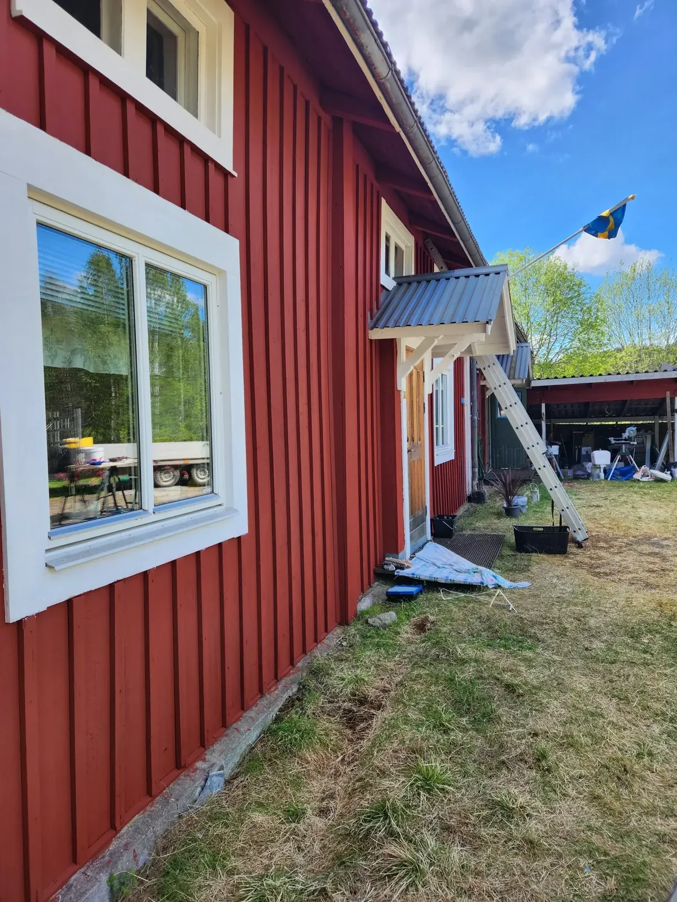
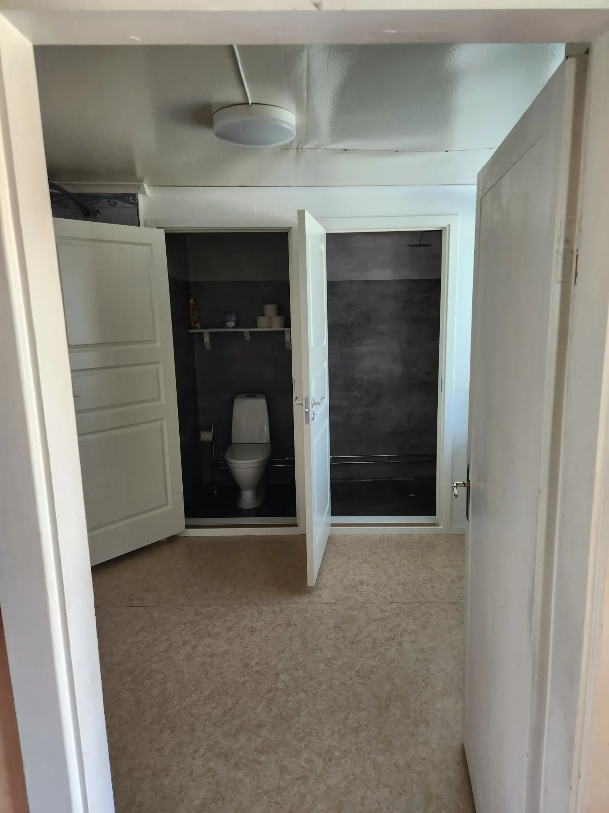

Reparationer & underhåll
Små reparationer, justeringar, felsökning och praktiskt underhåll i och runt hemmet.


REPARATIONER · INSTALLATIONER · RENOVERINGAR
Praktisk hjälp för husägare, fritidshusägare och småföretag — från små reparationer till större renoveringar.
PRAKTISK HJÄLP
Söker du en hantverkare i Värmland för reparationer, installationer eller renovering? Nico on Point Services hjälper till med praktiska uppdrag i hem, fritidshus och småföretag.
Du kan vända dig till en och samma kontaktperson för många praktiska och tekniska arbeten, så att du slipper ringa olika personer för varje litet uppdrag.
DET HÄR KAN JAG HJÄLPA MED
Små reparationer, justeringar, felsökning och praktiskt underhåll i och runt hemmet.
Beslag, hyllor, väggfästen, möbelmontering och andra praktiska installationer.
Förbättringar inomhus, färdigställande och större renoveringar som diskuteras i förväg.
Invändig och utvändig målning med tillhörande förberedelser och underhåll.
Montering och inställning av apparater, praktisk felsökning och allmänt tekniskt stöd.
Passar uppdraget inte riktigt in i någon kategori? Hör av dig så kan vi diskutera vad som är möjligt.
VERKLIGA PROJEKT
Det här är foton från verkliga projekt hos Nico on Point Services.
Renovering av träningscentret i Sörbygden och tillhörande utrymmen.

Väggmontering av TV och soundbar, anpassad efter rummet och önskad tittarhöjd. Teknisk hjälp och montering för bostäder och fritidshus i Värmland.

Utvändig målning av en träfasad med bomlift för de högre delarna. Målning och fasadunderhåll med Lesjöfors som bas, för uppdrag i Värmland och även utanför området enligt överenskommelse.

Installation av en dusch som en del av inredning och färdigställande av ett badrum.

Renovering och inredning av badrum och toalett, med omsorg om praktisk planlösning och ytskikt.

Renovering och inredning av ett vandrarhemsrum med praktiska lösningar för ett bekvämt och användbart gästrum.
SÅ FUNGERAR DET
Berätta vad som behöver göras och var fastigheten ligger. Bifoga några foton om de hjälper till att förklara situationen.
Vi kommer överens om arbetet, vilka material som sannolikt behövs och om timpris eller en separat offert passar bäst.
Arbetet utförs med tydlig kommunikation om något ändras eller ytterligare arbete visar sig vara lämpligt.
Vi går igenom resultatet tillsammans och du får en tydlig översikt över det utförda arbetet och eventuella nästa steg.
TYDLIG OMFATTNING
Jag kan utföra många praktiska uppdrag själv. Arbete som kräver en behörig eller certifierad specialist, till exempel vissa fasta el- eller VVS-installationer, ingår inte i sådant arbete. Vid behov diskuterar vi nästa steg eller samordning med rätt yrkesperson.
PRISINDIKATION
Alla priser är inklusive moms.
VEM JAG HJÄLPER

KOMPLETTERANDE TJÄNSTER
Mitt huvudsakliga arbete är praktisk och teknisk hjälp med fastigheter. Med 35 års erfarenhet av webbdesign och datorarbete erbjuder jag även dessa kompletterande tjänster på förfrågan.
Webbdesign →
Praktiska webbplatser för småföretag och egenföretagare.
Datorreparationer →
Felsökning, underhåll och reparation av stationära och bärbara datorer. Specialbyggda datorer är också möjliga på förfrågan.
Arbetsstationen i en tunna som visas här byggdes som en del av ett projekt med ett vandrarhemsrum.
PRAKTISKT ARBETE, TYDLIGT FÖRKLARAT
Den exakta omfattningen beror på fastigheten och uppdraget. Det här är exempel på praktiskt arbete som passar tjänsten.
Små reparationer, justeringar, byte av skadade delar, lösning av praktiska problem och skötsel för att hålla fastigheten i gott skick.
Möbler, hyllor, beslag, montering i samband med belysning, apparater och andra praktiska installationer som inte kräver certifiering.
Förberedelser, rivning, färdigställande, reparationer och praktisk hjälp med kök, badrum, interiörer och fritidshus.
Hitta den troliga orsaken till ett praktiskt problem och hjälpa till att avgöra om det kan lösas direkt eller kräver en specialist.
Praktiska förbättringar, säsongsarbete, förberedelser inför gäster och underhåll som passar bra ihop med löpande fastighetsskötsel.
Om behörigt elarbete, VVS-arbete eller annat specialistarbete behövs kan jag hjälpa till med förberedelser, tillträde och det praktiska arbetet runt omkring. Genom mitt nätverk kan jag också förmedla kontakt med yrkespersoner som har de behörigheter och certifieringar som krävs för att utföra arbetet.
PRISINDIKATION
För de flesta allmänna uppdrag är timpris det enklaste och mest rättvisa upplägget. Större eller tydligt avgränsade uppdrag kan också offereras till ett fast projektpris.
ALLMÄNT PRAKTISKT / TEKNISKT ARBETE
699 SEK / timme Preliminärt pris före eventuellt ROT-avdragVERKLIGA PROJEKT
Foton från verkliga projekt visar det arbete, de miljöer och de problem jag faktiskt arbetar med.


HAR DU ETT UPPDRAG I ÅTANKE?
Det räcker oftast för att jag ska kunna säga om jag kan hjälpa till, vilken information som saknas och om en uppskattning per timme eller fast offert passar bäst.
KUNDOMDÖMEN
Nico rekommenderas varmt för alla typer av jobb i hemmet. Han arbetar med passion och håller dig uppdaterad om timmar och framsteg. Han tar också hand om vårt svenska hus som om det vore hans eget. Han tänker framåt och diskuterar beslut innan arbetet börjar.Praktiska arbeten och fastighetsskötsel
Detta omdöme kommer från Google och har översatts från nederländska.
Lämna en Google-recension →
BERÄTTA OM UPPDRAGET
Skicka en kort beskrivning, gärna några foton och fastighetens läge. Sedan kan vi diskutera ett praktiskt nästa steg.